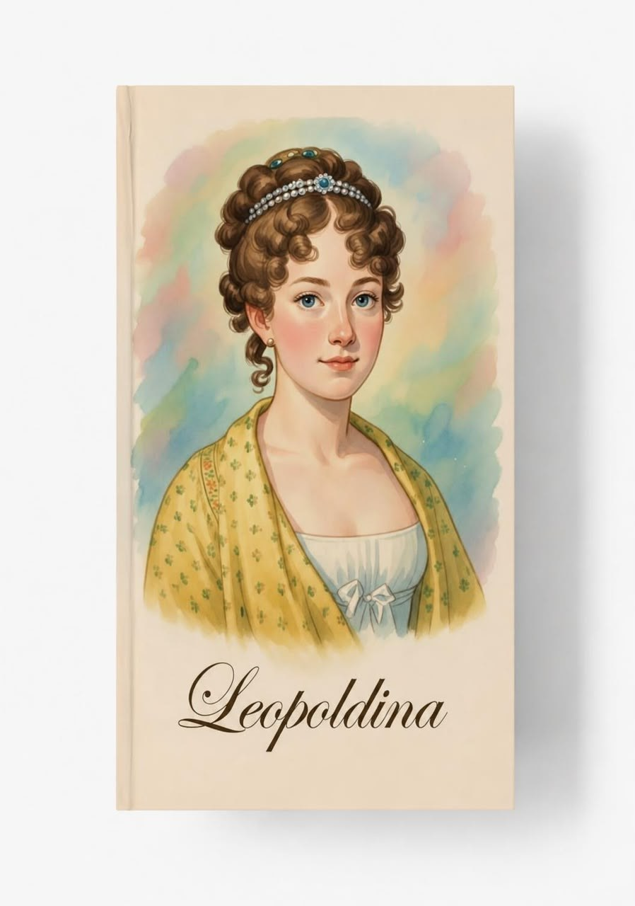

A história do Brasil para cada fase
Conteúdo sobre a história do Brasil adaptado para cada fase da infância, unindo aprendizado e reflexão crítica.
Leopoldina
Introdução
Em meio a tantas versões da história que diminuem ou distorcem o papel das grandes figuras da monarquia do Brasil, este material recupera a verdadeira Leopoldina. Construído a partir de fontes históricas e biografias clássicas, apresenta a menina austríaca que se tornou Imperatriz do Brasil: sua educação sólida, o amor pela ciência e pela arte, o casamento por procuração e a longa viagem que a trouxe ao Rio de Janeiro.
Atende a todas as idades
Comprar
Objetivos de Aprendizagem
- Compreender o casamento real e a chegada de Leopoldina ao Brasil
- Praticar localização geográfica (Áustria–Brasil) e leitura de textos biográficos
- Desenvolver curiosidade histórica e atenção a detalhes
- Cultivar apreço pela figura de uma mulher culta, corajosa e decisiva na formação do país
Conteúdo da Apostila
Material com 16 páginas em PDF prontas para impressão. Inclui a infância de Leopoldina na Áustria, seus interesses por botânica e artes, o casamento por procuração, a descrição do grande baile, a viagem de 86 dias e a chegada ao Rio de Janeiro, além de atividades de mapa, desenho e sugestões de música.
Indicação
Ideal para apresentar às crianças a história da Imperatriz Leopoldina, em casa ou em sala de aula — um material prático, belo e envolvente, que une biografia, geografia e atividades criativas de forma leve e verdadeira.